Overview
Identity Guardian can be installed and configured through one of the following methods:
- Zebra DNA Cloud: Navigate to My Apps > Zebra Collection to install and manage the application.
- Enterprise Mobility Management (EMM) system: Administrators can configure Identity Guardian using Managed Configurations, which define usage policies and device controls, enabling customized device restrictions and access settings.
Identity Guardian offers two distinct access modes:
- Shared Device - Designed for multiple users, personal data is encrypted and can be stored securely within a barcode. The barcode serves as an authentication method for signing into the device and is generated using facial recognition or a passcode via the zCreator app. The app allows users to preview, resize, print, or share the barcode through Gmail or Bluetooth. Users can delete the barcode to erase their personal data at any time.
- Personally Assigned Device - Designed for single-user devices, this mode securely embeds personal data within the Android framework, ensuring it remains private and inaccessible to the organization.
To use Identity Guardian, users must enroll in the system before signing in to authenticate their devices. Integration with the organization's identity provider (IdP) enables single sign-on (SSO), streamlining application access with a single login.
The Zebra DNA Cloud dashboard provides administrators with actionable insights, such as sign-in/sign-out events and usage durations, fostering accountability and efficient management. These insights help organization ensure operational efficiency and accountability in managing devices.
Setup Notes:
- Identity Guardian is non-operational in safe mode. Zebra advises against starting devices in safe mode. To disable safe mode, apply the corresponding XML through your EMM or scan the relevant barcode using the StageNow client on the device. The XML and StageNow barcode are available depending on your Android version:
- When using the 42Gears EMM system, apps installed via Zebra DNA Cloud in app update mode must be set as high priority.
Requirements
Identity Guardian Requirements:
- An Enterprise Mobility Management (EMM) system, such as Zebra DNA Cloud or a third party system, that supports Managed Configurations (also known as Managed App Configurations) is required to configure Identity Guardian on the device.
- Device enrolled as Dedicated Device (Device Owner)
NOTE: Corporate-Owned, Personally-Enabled (COPE) enrolled devices are currently not supported. - Zebra devices running Android 11 or higher are supported. See Zebra Support Portal for supported devices.
- For biometric authentication, a front-facing camera is required on the device.
- Licenses:
- An Identity Guardian license is required for advanced features including facial biometric authentication, Single Sign-On (SSO) support and device API support. See Licensing.
- Zebra Professional-series devices require a Mobility DNA Enterprise license for basic functionality.
- After installation on the device, Identity Guardian must be launched for the configurations to be applied.
- Single sign-on (SSO) support: Compatibility with Microsoft Entra ID (formerly Azure Active Directory), PingID and OKTA platforms using OAUTH and OAUTH+OIDC authentication protocols.
- Barcode Authentication: If barcodes are required for user authentication, see Print & Share Barcode.
Download
Download and install Identity Guardian from the following sources:
- Google Play - By default, Google Play apps, including Identity Guardian, are set to update automatically. To manage updates:
- Disable Automatic Updates - Submit the Disable_AutoUpgrade_IG.xml through your EMM platform.
- Enable Automatic Updates - Submit the Enable_AutoUpgrade_IG.xml through your EMM platform.
- Zebra support portal
Shared Device
In environments where a single device is used by multiple users, Identity Guardian provides secure and personalized access tailored to each user's organizational role. To use a shared device, users must complete a one-time enrollment with Identity Guardian. These shared devices can support an unlimited number of registered users, ensuring flexibility and scalability.
Enrollment Methods
- Standard Enrollment - Users enroll on a dedicated device with an Enrollment profile set up by their administrator. Once enrolled, users authenticate on their shared device, which has the Authentication profile deployed by the administrator. SSO or a user barcode can be used for user authentication.
- Self-Enrollment - Both enrollment and authentication are conducted directly on the shared device through a unified Authentication profile that incorporates enrollment configurations set up by the administrator. User barcodes are used for authentication.
Upon enrollment, user data is securely encrypted and stored within a unique barcode generated with the zCreator app. When enrollment is complete, this barcode is saved in the /enterprise/usr/Profiles folder. The barcode must be printed or shared within 24 hours before it is automatically deleted. This ensures that personal information is not retained on the device or in the cloud. For temporary user profiles, barcodes can be set to expire automatically at a predetermined date and time. Organizations may opt to use facial biometrics for authentication to enhance security. Alternatively, SSO can serve as the primary authentication method instead of issuing individual barcodes.
During enrollment, the user’s personal information, such as biometric facial image capture and passcode, is encrypted with an enrollment key. This key is an encrypted public key derived from the organization’s certificate and configured via Identity Guardian Managed Configuration. For details on generating an enrollment key, see Enrollment Configuration. Ensure the device used for enrollment is provisioned with the Enrollment configuration.
To authenticate users on a device, administrators must supply the authentication key, an encrypted private key derived from the organization’s certificate and configured through Identity Guardian Managed Configuration. For details on generating the authentication key, see Authentication Configuration. Ensure the device is provisioned with the Authentication configuration.
When the enrollment barcode is scanned, its data is decrypted using the authentication key and used for further authentication checks. This barcode cannot be decrypted or reverse-engineered on any device without the authentication key. Organizations must maintain the security and confidentiality of their authentication key.
IMPORTANT:Administrators MUST provision their own enrollment key on devices designated for user enrollment and MUST provision their authentication key on devices designated for user authentication. Failure to do so results in Identity Guardian using default keys, allowing any device with those keys to decrypt the barcode.
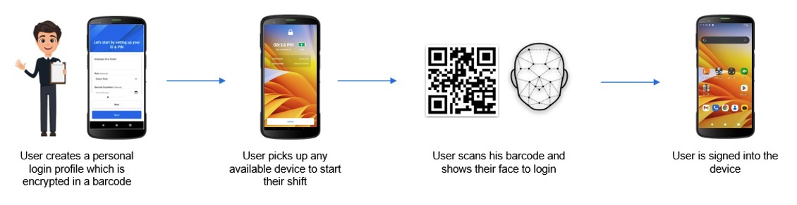
Standard Enrollment
Standard Enrollment involves two separate steps, each performed on different devices:
- User Enrollment: Performed on a dedicated enrollment device, allowing users to complete the enrollment process.
- User Authentication: Once enrolled, users can authenticate on their assigned shared device.
Administrators must complete the following to enable Standard Enrollment on shared devices:
- Create and deploy individual Enrollment and Authentication profiles - Enables user enrollment and authentication; refer to EMM Setup.
- If user barcodes are required, install and configure zCreator - Allows for barcode printing and sharing.
- Guide users to complete enrollment directly on the designated device.
- Guide users to authenticate on their designated shared device.
Configuration
I. User Enrollment:
Follow these steps to set up the dedicated enrollment device, enabling users to register into the system from a single device:
- Create an Enrollment profile: Use Managed Configurations to set up the Enrollment Profile with the following essential settings. Additional settings can be adjusted based on your enrollment requirements:
- Usage Mode:
- Application Mode: ENROLLMENT
- Enrollment Configurations:
- Enrollment Key: [Enter the enrollment key to encrypt user data.]
- Number of facial images to be enrolled: 1 (Applies if using barcodes for authentication; this is the only acceptable value for barcode printing.)
- Allow opening barcode while enrollment: [Enable this if user barcodes are required for authentication.]
- Usage Mode:
- Install and configure zCreator (For user barcode creation): If barcode generation is required, set up a zCreator profile and configure the managed configuration settings:
- Settings Access: [Set to 1 to allow user access to zCreator settings, otherwise set to 2 to restrict access.]
- General Settings:
- QR Code Size: [Specify the size of the QR Code to be printed.]
- Orientation: [Specify the orientation for the printed barcode.]
- Share-to Settings:
- Sharing: [Set to 1 to allow the user to share the barcode from within the app, otherwise set to 0 to disable.]
- Printer Settings: Configure printer settings for network (WiFi or Ethernet) or Bluetooth printing:
- Network Settings: [Set to 1 to allow the user to change the network printer configuration, otherwise set to 0.]
- IP Address: [Enter the IP address of the network printer.]
- Bluetooth Settings: [Set to 1 to allow the user to change the Bluetooth printer configuration, otherwise set to 0.]
- Bluetooth MAC Address: [Enter Bluetooth printer MAC address.]
- Network Settings: [Set to 1 to allow the user to change the network printer configuration, otherwise set to 0.]
- Add zCreator to the Allowlist (For barcode generation): For barcode printing and sharing, ensure zCreator is included in the Apps Allowed On Lock Screen under Lock Screen Configuration. Add the following application details as needed:
To share barcodes through apps, add the respective third-party package names and activity names.Purpose Package Name Activity Name Display the barcode print preview com.zebra.igqrprint com.zebra.igqrprint.PreviewActivity com.zebra.igqrprint com.zebra.igqrprint.SettingsActivity android com.android.internal.app.ChooserActivity Print the barcode com.android.bips ImagePrintActivity com.android.printspooler com.android.printspooler.ui.PrintActivity - Deploy the Enrollment and zCreator profiles. Push the configured profiles to the designated enrollment device.
- Launch Identity Guardian and Complete Enrollment. Open Identity Guardian on the enrollment device. Users can complete the enrollment process by following the prompts. Available options, such as printing a barcode during enrollment, depend on the profile configurations.
II. User Authentication
- Create an Authentication profile: Use Managed Configurations to configure the Authentication Profile with the following key settings. Adjust other settings as required:
- Usage Mode:
- Application Mode: AUTHENTICATION
- Lock Screen Configuration:
- Apps Allowed On Lock Screen: [Enable this option to allow specific applications to be displayed on the lock screen. For each app, provide the necessary details (e.g., Package Name, Activity Name).]
- Usage Mode:
- Deploy the Authentication profile. Launch Identity Guardian as part of the deployment.
- Authenticate user. Users can authenticate and sign in to their shared device.
Self-Enrollment
Self-Enrollment enables user enrollment and authentication directly on shared device using a unified Authentication profile. This profile, deployed by administrators, includes enrollment configurations and uses SSO for user authentication.
Administrators must complete the following to enable Self-Enrollment on shared devices:
- Install and configure the zCreator app. This allows for barcode printing and sharing.
- Create and deploy an Authentication profile. This enables user enrollment and authentication; refer to EMM Setup.
- Guide users to complete enrollment directly on the device.
Configuration
Step-by-step Configuration (refer to EMM Setup):
- Install zCreator on the devices.
- Create an Authentication profile: Using Managed Configurations, configure the Authentication Profile with the following settings. Adjust all other settings based on your requirements:
- Usage Mode:
- Application Mode: AUTHENTICATION
- Enrollment Configuration:
- Number of facial images to be enrolled: 1 (Applies if using barcodes for authentication; this is the only acceptable value for barcode printing.)
- Authentication Configuration: Configure the desired settings. SSO must be configured as one of the Verification methods. Additionally, enter the Authentication Key to decrypt the user's personal information.
- Lock Screen Configuration:
- Apps Allowed On Lock Screen: [Enable this option to allow specific applications to be displayed on the lock screen. The zCreator app must be added to the allowlist; see step 3 below. For each app, add the corresponding application details (e.g., Package Name, Activity Name)]
- Allow Self Enrollment:
- Secure Self Enrollment: true
- User Verification: SSO
- Usage Mode:
- Add zCreator to the Allowlist (For barcode generation): For barcode printing and sharing, ensure zCreator is included in the Apps Allowed On Lock Screen under Lock Screen Configuration. Add the following application details as needed:
To share barcodes through apps, add the respective third-party package names and activity names.Purpose Package Name Activity Name Display the barcode print preview com.zebra.igqrprint com.zebra.igqrprint.PreviewActivity com.zebra.igqrprint com.zebra.igqrprint.SettingsActivity android com.android.internal.app.ChooserActivity Print the barcode com.android.bips ImagePrintActivity com.android.printspooler com.android.printspooler.ui.PrintActivity - Create a zCreator profile: If barcode generation is required, set up a zCreator profile and configure the managed configuration settings:
- Settings Access: [Set to 1 to allow user access to zCreator settings, otherwise set to 2 to restrict access.]
- General Settings:
- QR Code Size: [Specify the size of the QR Code to be printed.]
- Orientation: [Specify the orientation for the printed barcode.]
- Share-to Settings:
- Sharing: [Set to 1 to allow the user to share the barcode from within the app, otherwise set to 0.]
- Printer Settings: Configure printer settings for network (WiFi or Ethernet) or Bluetooth printing:
- Network Settings: [Set to 1 to allow the user to change the network printer configuration, otherwise set to 0.]
- IP Address: [Enter the IP address of the network printer.]
- Bluetooth Settings: [Set to 1 to allow the user to change the Bluetooth printer configuration, otherwise set to 0.]
- Bluetooth MAC Address: [Enter Bluetooth printer MAC address.]
- Network Settings: [Set to 1 to allow the user to change the network printer configuration, otherwise set to 0.]
- Deploy the Authentication and zCreator profiles. Launch Identity Guardian as part of the deployment.
- Guide users through enrollment. After launching Identity Guardian, users follow prompts to complete enrollment. Available options depend on the Authentication profile settings configured by the administrator.
After enrollment is complete, users can authenticate and sign in to the device.
Print & Share Barcode
The zCreator app, a companion to Identity Guardian, creates secure, unique user barcodes based on facial recognition or passcode. It streamlines the process of printing and sharing these barcodes generated during enrollment on Shared Devices. These barcodes serve as an authentication method, enabling users to sign into their devices seamlessly. Supporting both r Standard and Self-Enrollment workflows, the app provides features such as barcode preview, resizing, and direct printing to compatible printers. This allows barcodes to be quickly printed in a readable format for efficient user authentication. Additionlly, barcodes can be shared via Gmail or Bluetooth.
The Self-Enrollment and Standard Enrollment sections guide administrators through the procedure to install and configure zCreator. For manual configuration after installation, follow the instructions provided below.
Supported Printers:
- Zebra ZD620
- Zebra ZD621
- Canon PIXMA E560 Series
Download and install zCreator through:
- Google Play
- Zebra support portal
Access zCreator Settings: The Settings menu is accessible by tapping on the menu icon at the top left and selecting Settings.
| 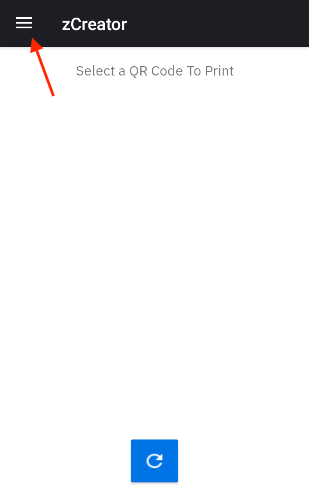 | 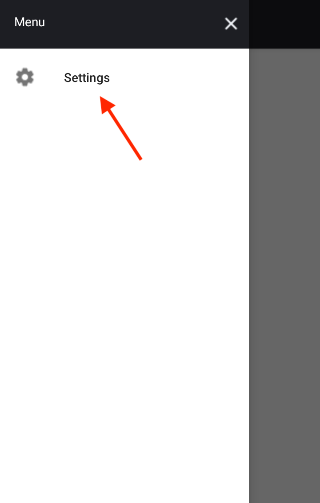 | 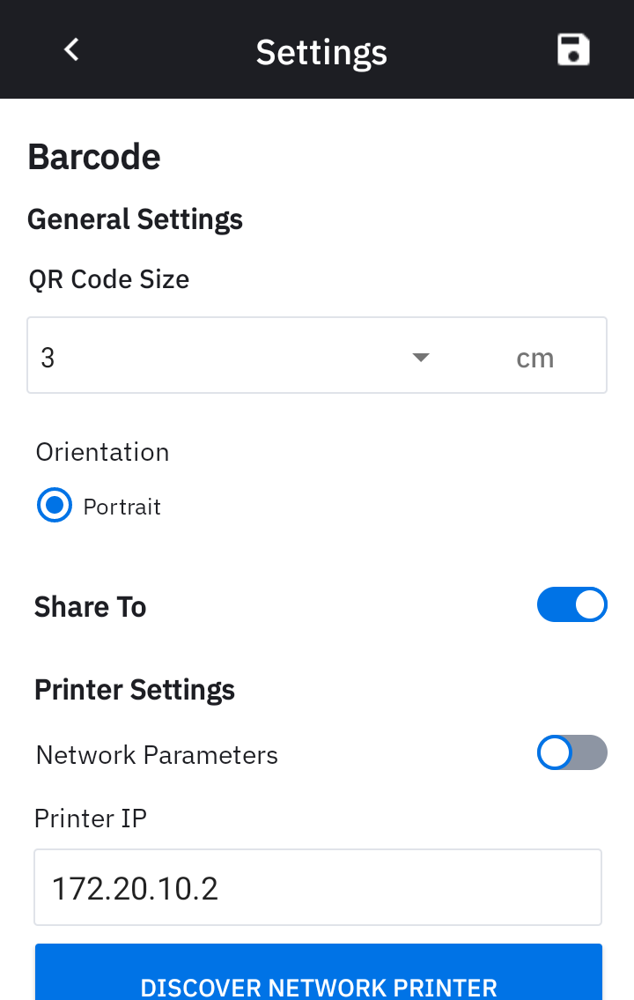 | ||
| Access to zCreator Settings | ||||
Configure zCreator
Configure the zCreator settings:
Adjust the QR Code Size: Specify the size of the QR Code to print. 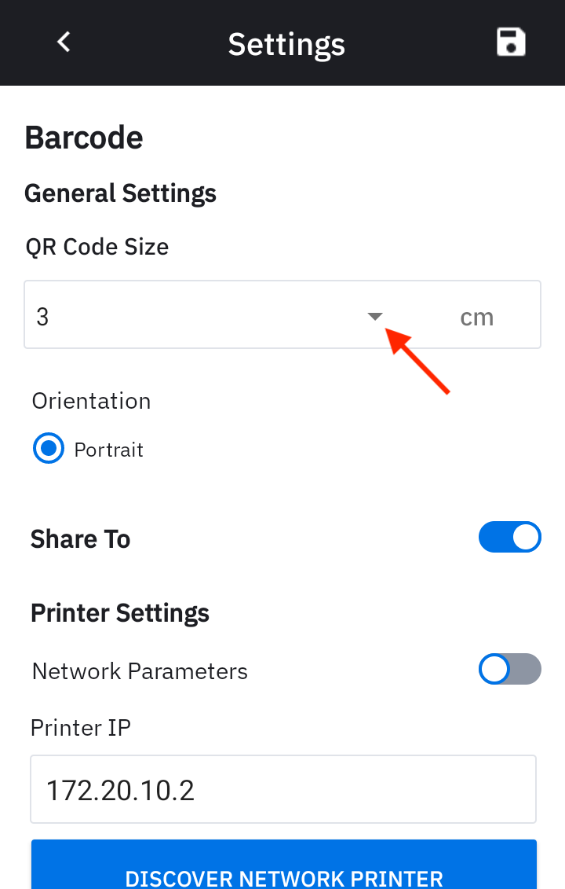
Set network printer settings:
Toggle on Network Parameters and enter the Printer IP address. If this is not known, tap Discover Network Printer to perform a search for the network printer and allow the user to select the desired printer.
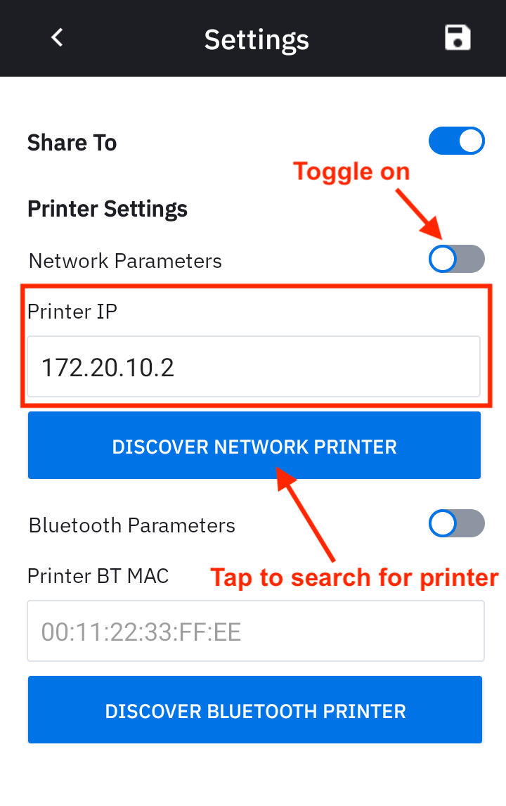 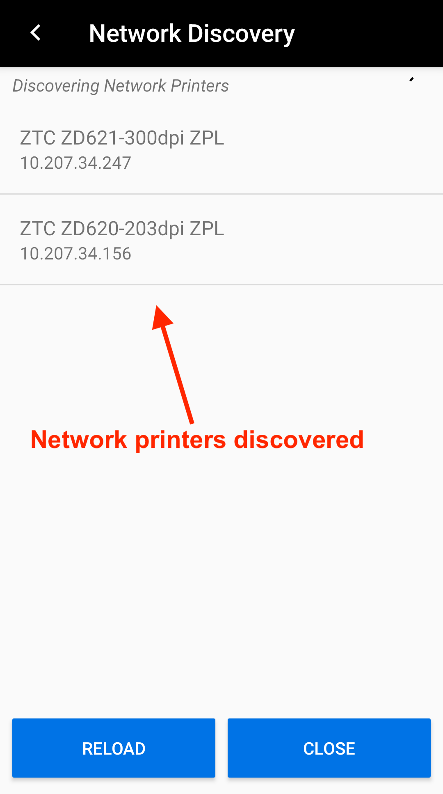 Network Printer Settings Search for Bluetooth Printer Set Bluetooth printer settings:
Toggle on Bluetooth Parameters and enter the Bluetooth MAC address. If this is not known, tap Discover Bluetooth Printer to perform a search for the network printer and allow the user to select the desired printer.
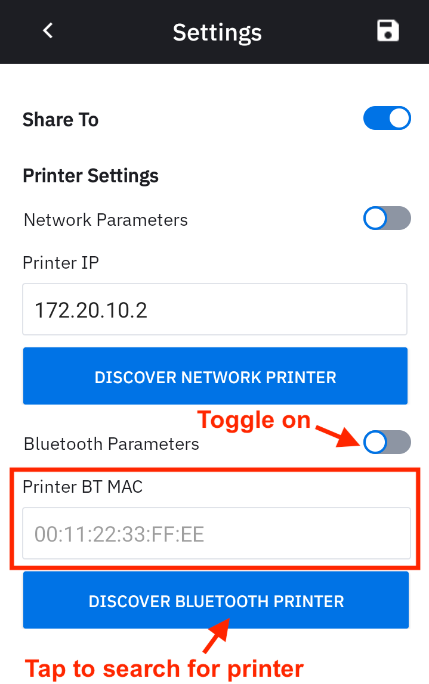 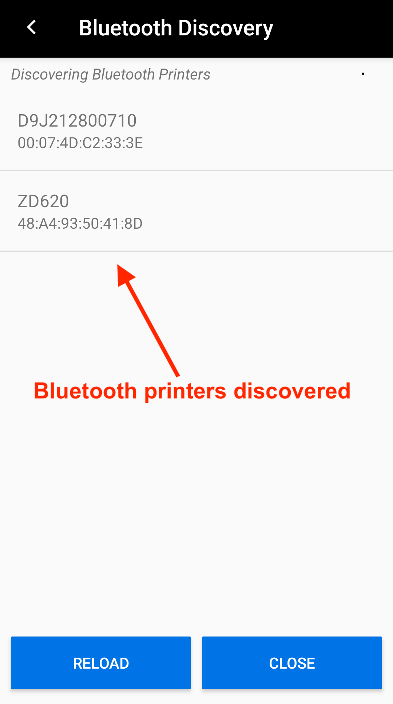 Bluetooth Printer Settings Search for Bluetooth Printer Share-To:
Toggle on Share-to and select the desired method to share. 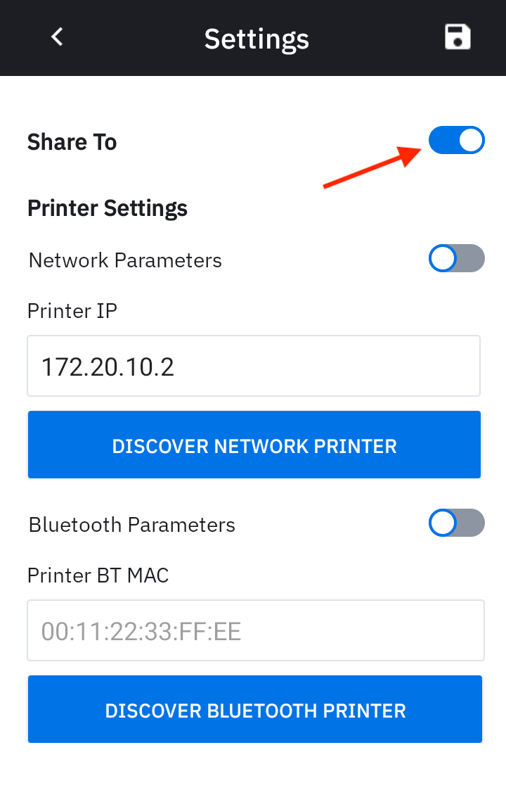
Personally Assigned Device
In environments where devices are assigned to specific users, these individuals retain control over their encrypted personal data and can delete it as needed. User data is safeguarded within the Android framework, stored in Identity Guardian's isolated storage, which is part of Android's access-controlled application platform. This ensures that even the organization itself cannot access the data.
Identity Guardian integrates with identity providers (IdPs) to streamline the authentication process. It uses a single sign-on (SSO) system, requiring users to authenticate only once. This system manages security and simplifies access, allowing users to log into multiple applications in a single session. For enhanced security, administrators can customize multifactor authentication settings, including a passcode, facial biometrics, and/or SSO. Unlike shared devices, personally assigned devices do not utilize barcodes.

Profile Setup
For personally assigned devices, administrators should create a profile which encompasses both enrollment and authentication configurations by following these steps (see EMM Setup):
- Create a profile:
- Use Managed Configurations to configure a profile.
- Under Usage Mode, set Application Mode = PERSONALLY ASSIGNED.
- Configure all necessary Managed Configuration settings, such as Enrollment, Authentication, and SSO Authentication.
- Deploy the profile. Launch Identity Guardian as part of the deployment.
- Guide users through enrollment. Users would follow the prompts in Identity Guardian to complete the enrollment process. The available options depend on the profile settings configured by the administrator.
- Authenticate the user. After enrollment is complete, users can authenticate and sign in to the device.
SSO
Identity Guardian integrates with identity providers (IdPs) simplifying authentication by only requiring users to log in once, and then leveraging single sign-on (SSO) to streamline the process. This single login grants users to gain access to multiple applications, eliminating the need to keep track of multiple logins for each app.
Supported identity providers:
For authenticating users with SSO, the Microsoft Authenticator and Custom Chrome Tabs are supported to communicate with SSO as the broker.
See SSO Requirements.
Microsoft Entra ID
This section provides guidance to integrate Identity Guardian with Microsoft Entra ID (formerly Azure Active Directory):
I. Register & Configure Identity Guardian
II. Add a 3rd-party Device Compliance Partner
III. Configure Microsoft Authenticator App
IV. Configure Zebra Identity Guardian App
I. Register & Configure Identity Guardian
To establish a trust relationship between Identity Guardian and the Microsoft identity platform, register Zebra Identity Guardian as an Android application in Microsoft Entra ID (IdP). For more information, refer to Microsoft's documentation for guidance on registering an application with the Microsoft identity platform.
Follow these steps:
- In the Microsoft Entra admin center, navigate to Applications > App registrations. In the Register an application screen, enter/select the following:
- Name: [Enter a name, e.g., Zebra Identity Guardian]
- Supported account type: Accounts in this organizational directory only (Single tenant)
- Redirect URI: Public client/native (mobile & desktop) msauth://com.zebra.mdna.els/ 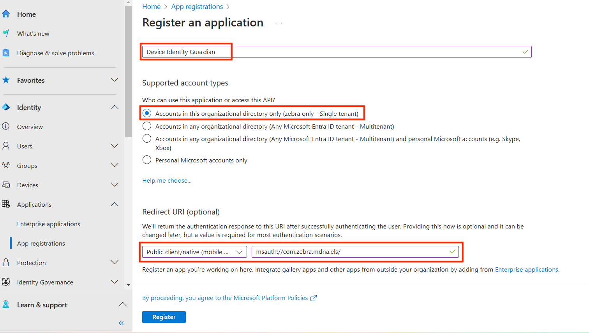
- Click Register.
- Navigate to Applications > App registrations > Authentication. Click Add a platform then click Android. 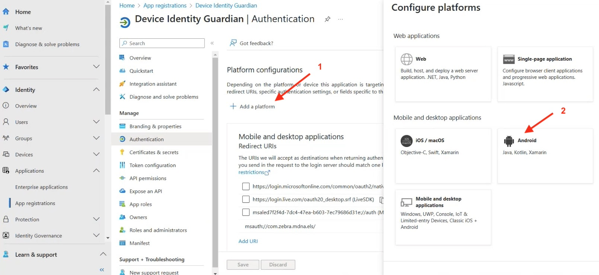
- Enter the following, then click Configure.
- Package name: com.zebra.mdna.els
- Signature hash: KqmK9tYXpw+eW2lke7US3iG9EAQ= 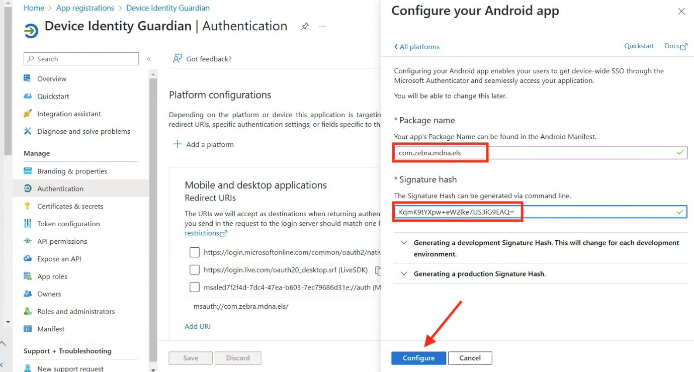
- The Android configuration screen displays. Copy and save the MSAL Configuration; it is required in a later step. Click Done. 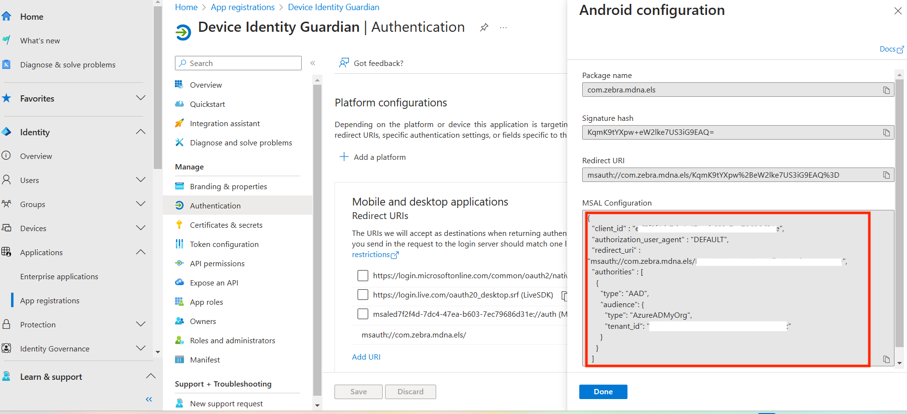
II. Add a 3rd-party Device Compliance Partner
When using Microsoft Authenticator for single sign-on (SSO) in shared device mode, a third-party device compliance partner solution can be integrated with Microsoft Intune. This allows for the collection of device compliance data alongside Intune's own compliance results. The combined data can then be used to develop access policies, offering enhanced protection for the organization and its data. Examples of third-party device compliance partners include solutions such as SOTI MobiControl, VMware Workspace ONE UEM (formerly AirWatch). For guidance on adding a third-party device compliance partner in Intune, consult your EMM or Microsoft's documentation .
III. Configure Microsoft Authenticator App
For optimal use of shared device mode with SSO through Microsoft Authenticator, ensure the Microsoft Authenticator app is installed on the devices. This facilitates automatic SSO single sign-in and single sign-out across Microsoft apps on the device.
To install and configure Microsoft Authenticator app:
Download and install the Microsoft Authenticator app from Google Play via an EMM, such as SOTI MobiControl, VMware Workspace ONE UEM, or Microsoft Intune.
In the Microsoft Entra ID admin center, navigate to Applications > App registrations > Overview and record the tenant ID. 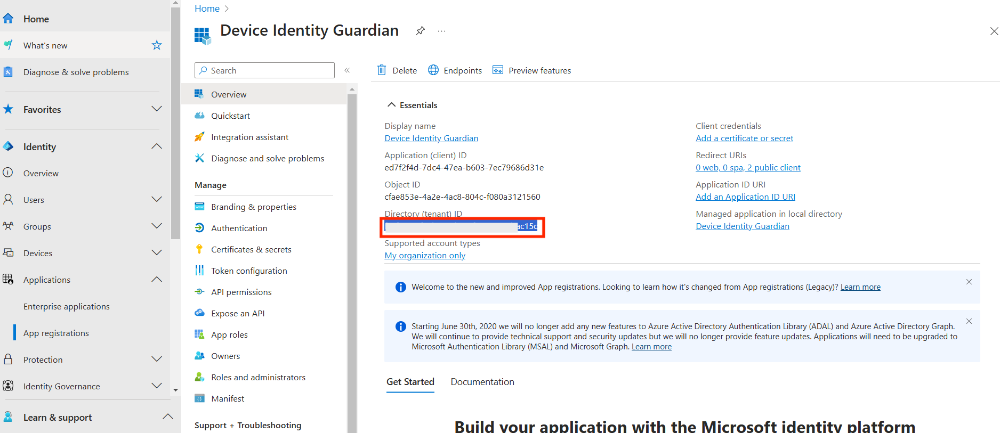 Retrieve the tenant ID
In the EMM, open Managed App Config for the Microsoft Authenticator app and enter the following:
- Shared Device Mode: [Toggle to enable]
- Shared Device Mode Tenant Identifier: [Enter the tenant ID recorded from the previous step]
- Shared Device Mode Registration token: %SHARED*DEVICE*REG_TOKEN%
 Sample of Managed App Config from SOTI MobiControl. Other EMMs may vary.
Sample of Managed App Config from SOTI MobiControl. Other EMMs may vary.
Click Save.
IV. Configure Zebra Identity Guardian App
To enable user access to the device through SSO, install and set up Identity Guardian on the devices:
Deploy and install the Zebra Identity Guardian app on the devices.
Launch the app using an EMM. This step must be performed at least once.
Enter the Managed Configuration settings for the app via your EMM: - Select Application Mode: Authentication
 zDNA Cloud Managed Config
zDNA Cloud Managed Config - Configure the Verification Setup to validate the user access:
- Primary Authentication Factor: SSO
- Secondary Authentication Factor: [Select FACE, PASSCODE, SSO or NONE]
- Fallback Authentication Factor: [Select FACE, PASSCODE, NONE, SSO or ADMIN BYPASS PASSCODE]
- Primary Authentication Timeout: [Enter value in ms, e.g. "300000"]
- Fallback Authentication Timeout: [Enter value in ms, e.g. "300000"]
 zDNA Cloud Managed Config sample screen
zDNA Cloud Managed Config sample screen
- Configure the Lock-screen Event options:
- On Unlock:
- Verification Setup: [Enter the desired authentication scheme, e.g. "Verification Setup1"]
- On Reboot:
- Verification Setup: [Enter the desired authentication scheme, e.g. "Verification Setup1"]
- On AC power connected:
- Verification Setup: [Enter the desired authentication scheme, e.g. "Verification Setup1"]
- On AC power disconnected:
- Verification Setup: [Enter the desired authentication scheme, e.g. "Verification Setup1"]
- On device manual check in:
- Verification Setup: [Enter the desired authentication scheme, e.g. "Verification Setup1"]
- On user change:
- Verification Setup: [Enter the desired authentication scheme, e.g. "Verification Setup1"] 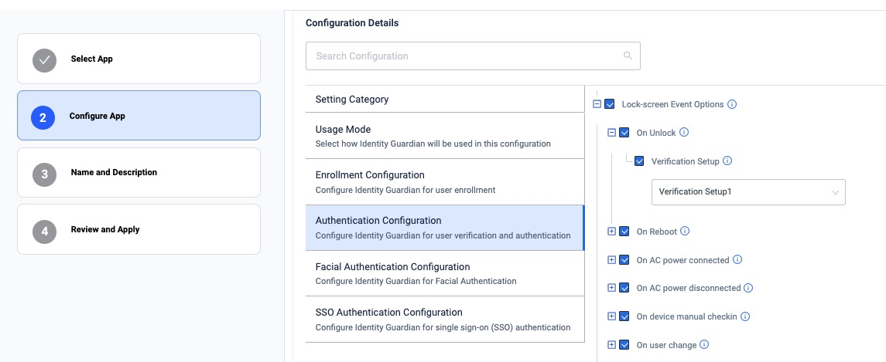 zDNA Cloud Managed Config sample screen
- Configure the Verification Setup to validate the user access:
- Configure the SSO Authentication Configuration for the app to communicate with Microsoft SSO to authenticate the user:
• Single Sign On Provider: Microsoft
• Authentication Protocol: OAuth 2.0 (OIDC)
• Scope: [Enter the string based on the SSO server settings]
• Configuration Settings: [Copy the MSAL Configuration from step I.5 and insert it into this field. Then:
• Add the key-value pairs forbroker_redirect_uri_registeredandshared_device_mode_supportedas shown in the sample below. This enables the Microsoft Authenticator app to register the device in shared device mode.
• Remove theaudienceelement along with all its child elements and their values.
• Enter theauthority_urlretrieved from Applications > App registrations > Overview. Click on Endpoints to view it.] 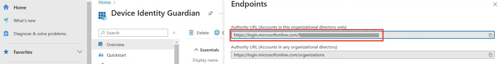 Retrieveauthority_urlendpoint - Userid identifier: [Enter the claim specifying the value to be displayed as the user name in Identity Guardian, e.g. preferred_username. Retrieve this from the Microsoft Entra ID admin center by navigating to Applications > App Registrations > Token configuration. Click Add optional claim and select ID for the token type.] 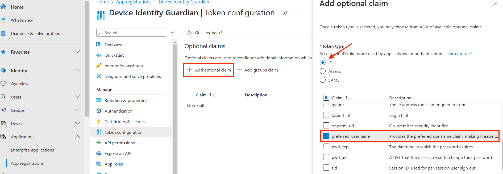 Claim used to display the user name~ 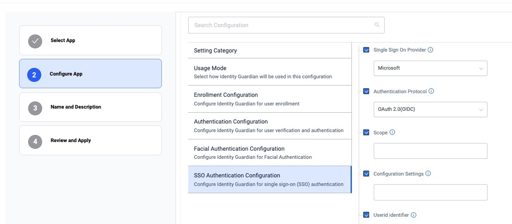 zDNA Cloud Managed Config
If mapping the SSO response to application-specific roles, enter the following (see Managed Configurations for more information):
- Configuration Role Identification - Enables the recognition and mapping of the Single Sign-On (SSO) response to application-specific roles. Click Add Role Identifier as needed.
- Role Identifier - Establishes links between roles in SSO responses and their corresponding roles within the Identity Guardian app.
- Identity Guardian Role Name - Enter the Identity Guardian user role to be assigned based on SSO response during user sign-in
- Key-value Pair for Role Assignment - Add one or more SSO key-value pairs to identify and map users to a predefined Identity Guardian user role. Click Add SSO Key-Value Pair as needed.
- SSO Key-Value Pair - Choose whether the SSO response, which contains the user key and values, should be mapped to a corresponding user role in Identity Guardian
- SSO Key - Enter the SSO key to map it to an Identity Guardian role.
- SSO Value - Enter the SSO value(s) to map to the Identity Guardian role. Use commas to separate multiple entries. 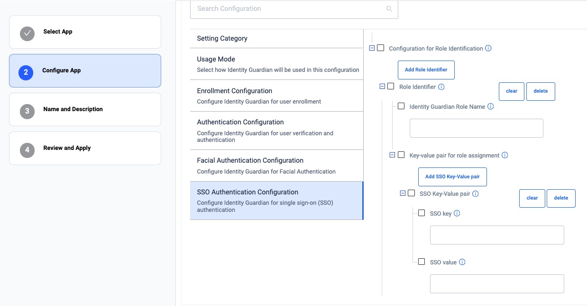 zDNA Cloud Managed Config
- Configuration Role Identification - Enables the recognition and mapping of the Single Sign-On (SSO) response to application-specific roles. Click Add Role Identifier as needed.
See Managed Configurations to configure any other non-SSO settings.
Deploy the Managed Configurations to the devices through your EMM.
{
"client_id" : "[Your client ID populated]",
"authorization_user_agent" : "DEFAULT",
"redirect_uri" : "msauth://com.zebra.mdna.els/
AbcB123Xab%c123a3xyz123ABCXYZ%12",
"account_mode" : "SINGLE",
"broker_redirect_uri_registered": true,
"shared_device_mode_supported": true,
"authorities" : [
{
"type": "AAD",
"authority_url": "[ENTER YOUR AUTHORITY URL]"
}
]
}
Ensure your Configuration Settings entered resembles this sample
When a device receives the new configurations, Zebra Identity Guardian activates the lock screen. The user must then authenticate via Single Sign-On (SSO) to access the device. For more details, see User Guide.
PingID
This section provides guidance to integrate Identity Guardian with PingID.
To enable user access to the device through SSO, install and set up Identity Guardian on the devices:
- Deploy and install Zebra Identity Guardian app on the devices.
- Launch the app using an EMM. This step must be performed at least once.
- Enter the Managed Configuration settings for the app via your EMM:
- Select the application mode:
- Application Mode: Authentication
zDNA Cloud Managed App Config
- Application Mode: Authentication
- Configure the Verification Setup to validate the user access:
- Primary Authentication Factor: SSO
- Secondary Authentication Factor: [Select FACE, PASSCODE, or NO_COMPARISON]
- Fallback Authentication Factor: [Select FACE, PASSCODE, NONE, SSO or ADMIN BYPASS PASSCODE]
- Primary Authentication Timeout: [Enter value in ms, e.g. "300000"]
- Fallback Authentication Timeout: [Enter value in ms, e.g. "300000"]
zDNA Cloud Managed Config
- Configure the Lock-screen Event options:
- On Unlock:
- Verification Setup: [Enter the desired authentication scheme, e.g. "Verification Setup1"]
- On Reboot:
- Verification Setup: [Enter the desired authentication scheme, e.g. "Verification Setup1"]
- On AC power connected:
- Verification Setup: [Enter the desired authentication scheme, e.g. "Verification Setup1"]
- On AC power disconnected:
- Verification Setup: [Enter the desired authentication scheme, e.g. "Verification Setup1"]
- On device manual check in:
- Verification Setup: [Enter the desired authentication scheme, e.g. "Verification Setup1"]
- On user change:
- Verification Setup: [Enter the desired authentication scheme, e.g. "Verification Setup1"] zDNA Cloud Managed Config
- Configure the SSO Authentication Configuration:
- Single Sign On Provider: PingId
- Authentication Protocol: OAuth 2.0 (OIDC)
- Scope: openid email profile
- Userid Identifier: [Specify the user key for identifying the signed-in user]
- Configuration Settings: [Enter the specified string, but replace the following values with those from your own SSO response: logoutURL, revokeURL, tokenURL, authorizationURL, clientId, userInfoUrl]
{ "redirectURI" : "com.zebra.mdna.els:/loginComplete", "logoutURL" : "[enter your logout URL]", "revokeURL" : "[enter your revoke URL]", "tokenURL" : "[enter your token URL]", "authorizationURL" : "[enter your authorization URL]", "clientAuthType" : 0, "clientId" : "[enter your clientID]", "certificatePhrase" : "", "userInfoUrl" : "[enter your userInfo URL]", "certificate" : "" } zDNA Cloud Managed App Config
zDNA Cloud Managed App Config
- Select the application mode:
- If mapping the SSO response to application-specific roles, enter the following (see Managed Configurations for more information):
- Configuration Role Identification - Enables the recognition and mapping of the Single Sign-On (SSO) response to application-specific roles. Click Add Role Identifier as needed.
- Role Identifier - Establishes links between roles in SSO responses and their corresponding roles within the Identity Guardian app.
- Identity Guardian Role Name - Enter the Identity Guardian user role to be assigned based on SSO response during user sign-in
- Key-value Pair for Role Assignment - Add one or more SSO key-value pairs to identify and map users to a predefined Identity Guardian user role. Click Add SSO Key-Value Pair as needed.
- SSO Key-Value Pair - Choose whether the SSO response, which contains the user key and values, should be mapped to a corresponding user role in Identity Guardian
- SSO Key - Enter the SSO key to map it to an Identity Guardian role.
- SSO Value - Enter the SSO value(s) to map to the Identity Guardian role. Use commas to separate multiple entries. zDNA Cloud Managed Config
- Configuration Role Identification - Enables the recognition and mapping of the Single Sign-On (SSO) response to application-specific roles. Click Add Role Identifier as needed.
- See Managed Configurations to configure any other non-SSO settings.
- Deploy the Managed Configurations to the devices through your EMM.
When a device gets updated with the new configurations, Zebra Identity Guardian activates the lock screen. The user is then required to authenticate themselves using Single Sign-On (SSO) to gain access to the device. See User Guide for more information.
Okta
This section provides guidance to integrate Identity Guardian with Okta using OAuth 2.0 (OIDC) protocol.
I. Register Zebra Identity Guardian
II. Configure Zebra Identity Guardian App
I. Register Zebra Identity Guardian
In the Okta web portal, create a new application. From the left menu, select Applications > Applications. Click on Create App Integration.

Select OIDC, then select Native Application. Click Next. 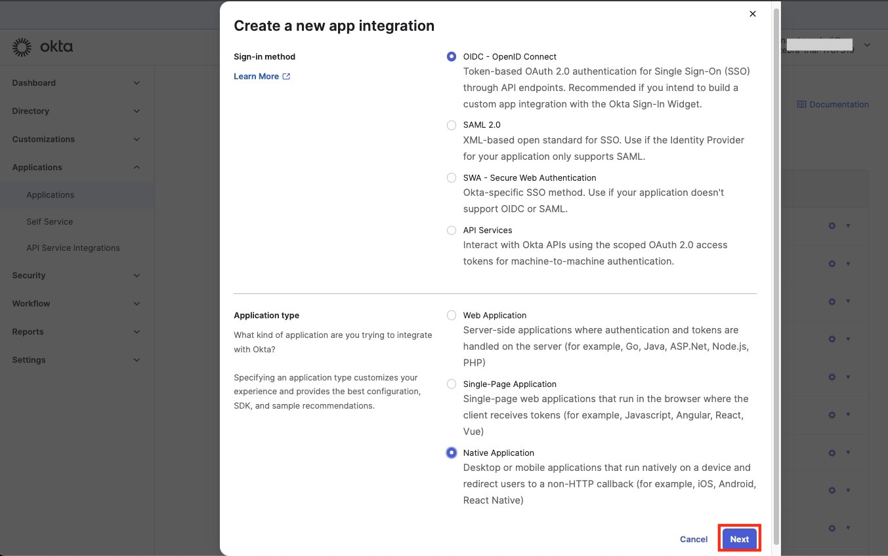
Enter the App integration name. If needed, select Refresh Token, which contains credentials that can be used to obtain a new access token without requiring the user to re-authenticate. This is particularly useful for maintaining a user’s session without requiring them to log in again after their access token expires. For Sign-in redirect URIs and Sign-out redirect URIs, enter the following:
com.zebra.mdna.els:/loginComplete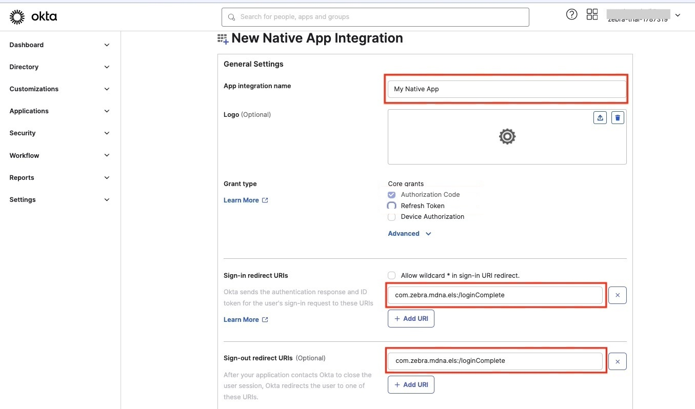For Controlled access, select Allow everyone in your organization to access. Then select Enable immediate access with Federation Broker Mode. Click Save.

From Security > API, click on Default. 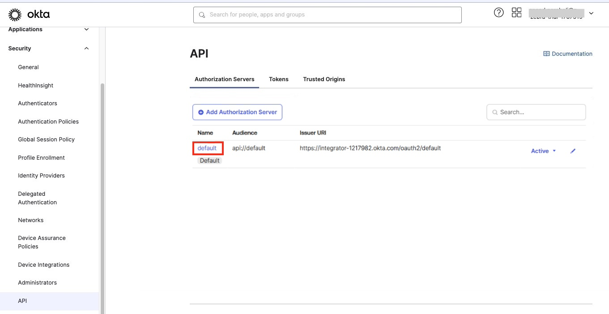
Click Add Scope. 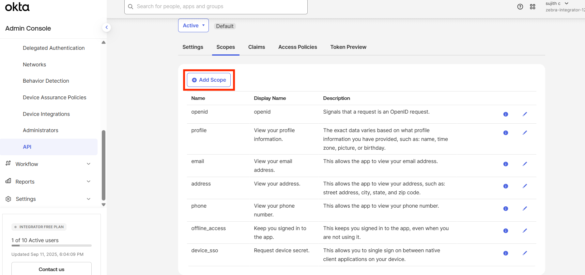
These scopes are enabled by default: openid, email, profile, offline_access. Click on the Access Policies tab, then click on Add Policy. 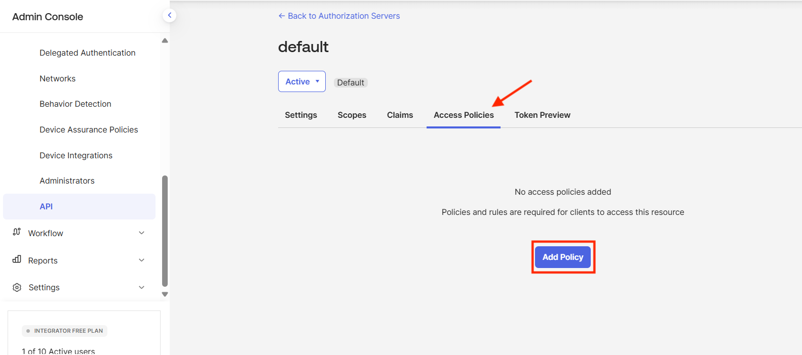
Enter a name and description. Click Create Policy. 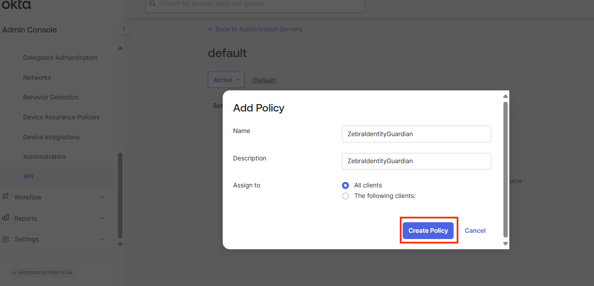
The policy is added. Click Add Rule. 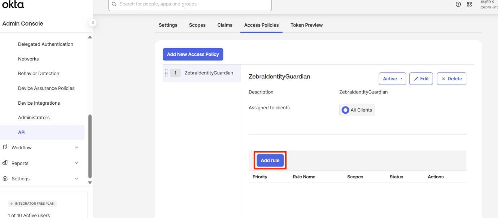
Enter a name for the rule and fill out the remaining fields as needed. Click Create rule. 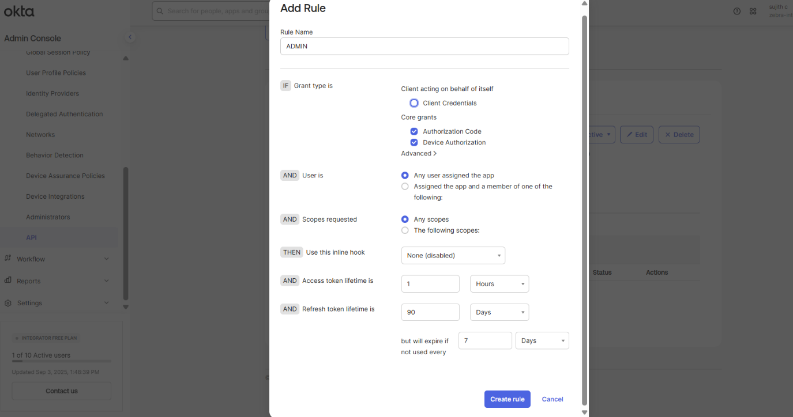
The rule is added.

Click the Claims tab to create a user role. This role will be used for role mapping in Identity Guardian. Click Add Claim. 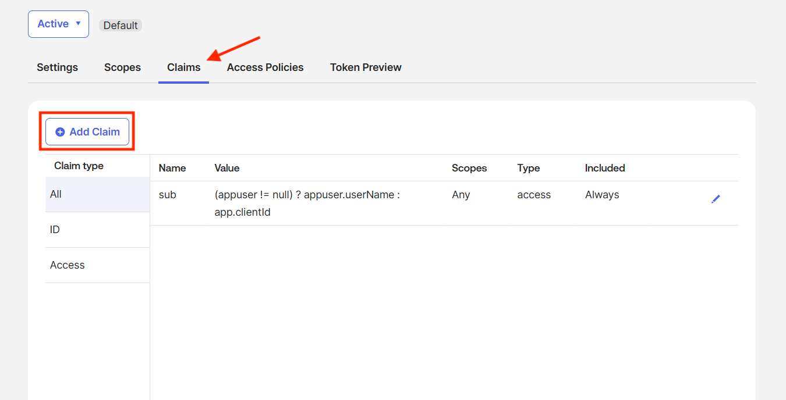
Enter a name. For Include in token type select ID Token, Value type select Groups, select a filter and enter "ADMIN" in the text field, and for Include In select Any scope.Click Create. 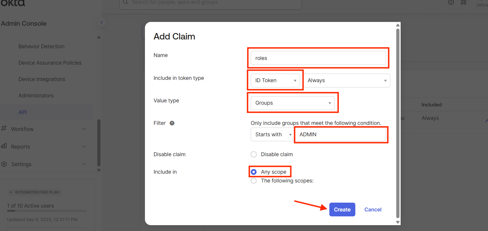
The claim is added. 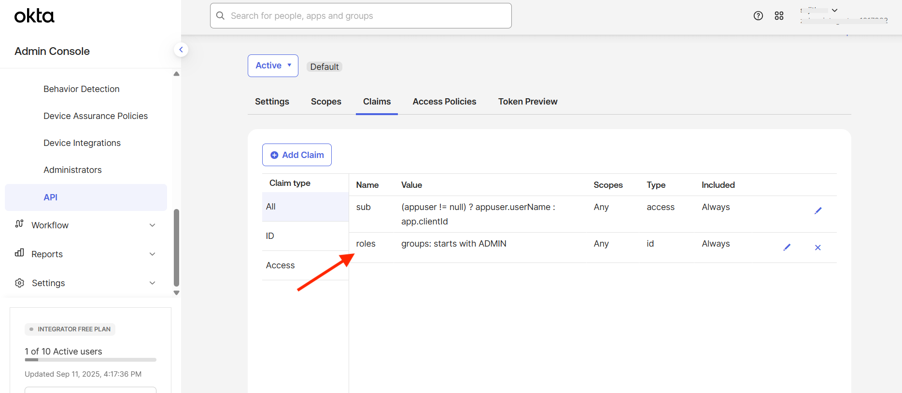
Go to Applications > Applications. Copy the Client ID of the application created in step 3, e.g. ZebraIdentityGuardian. This will be needed for a later step. Then, click on the Assign Users to App button to add users to access the created application. 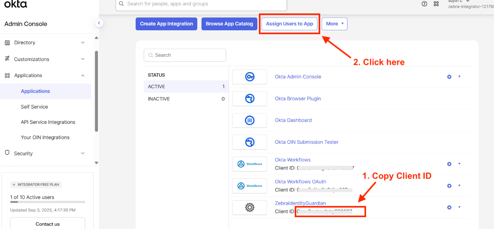
In the Applications section, select the application created. In the People section, select the user. Click Next to assign the application to the user. 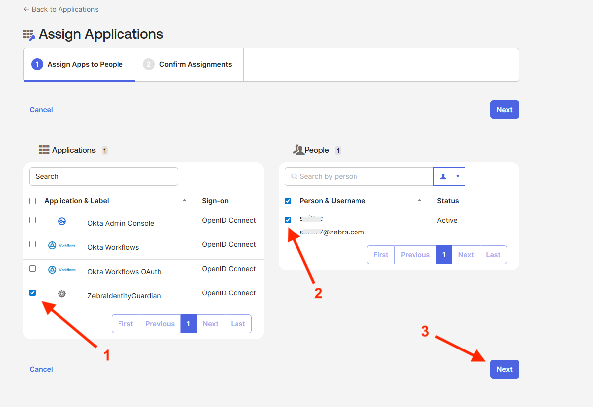
Go to Security > API. Click on default. 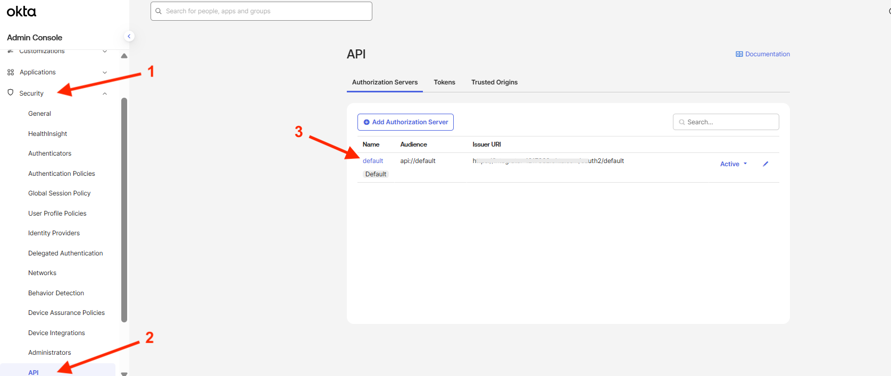
The Settings screen appears. Click on the Metadata URI link. 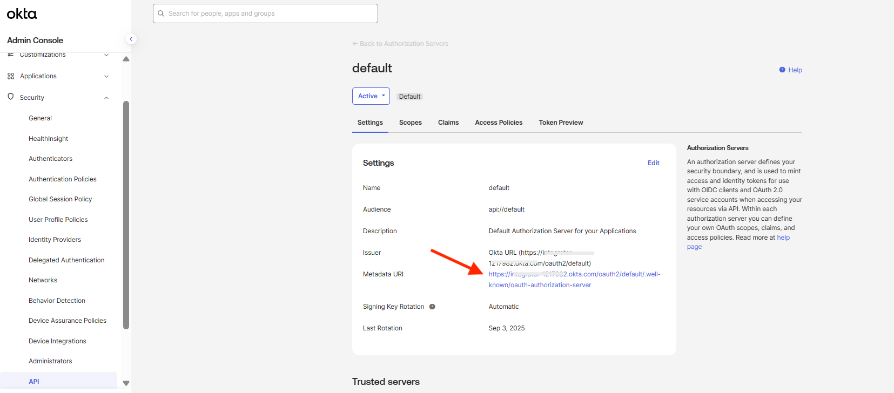
The browser opens displaying the Metadata URI, which includes the Identity Guardian end point APIs needed for Okta operations. Use the JSON format below build the SSO configuration needed for Identity Guardian. Replace the placeholders, indicated by angled brackets
<>, With the appropriate values obtained from the Metadata URI. This JSON data will be used in the next section to complete the SSO configuration.{ "authorizationScope": "openid, email, profile, offline_access", "redirectURI": "com.zebra.mdna.els:/loginComplete", "logoutURL": "<Enter the value specified for 'end_session_endpoint'>", "tokenURL": "<Enter the value specified for 'token_endpoint'>", "authorizationURL": "<Enter the value specified for 'authorization_endpoint'>", "clientAuthType": 0, "clientId": "<Enter the Client ID retrieved from step 12 above>", "certificatePhrase": "", "userInfoUrl": "<Enter the value specified for 'issuer'>/v1/userinfo", "revokeURL": "<Enter the value specified for 'revocation_endpoint'>", "certificate": "", "clientSecret": "", "enablePKCE": true }
II. Configure Zebra Identity Guardian App
To enable user access to the device through SSO, install and set up Identity Guardian on the devices:
Deploy and install Zebra Identity Guardian app on the devices.
Launch the app using an EMM. This step must be performed at least once.
Enter the Managed Configuration settings for the app via your EMM:
- Select the application mode:
- Application Mode: Authentication
zDNA Cloud Managed Config
- Application Mode: Authentication
- Configure the Verification Setup to validate the user access:
- Primary Authentication Factor: SSO
- Secondary Authentication Factor: [Select FACE, PASSCODE, SSO or NONE]
- Fallback Authentication Factor: [Select FACE, PASSCODE, NONE, SSO or ADMIN BYPASS PASSCODE]
- Primary Authentication Timeout: [Enter value in ms, e.g. "300000"]
- Fallback Authentication Timeout: [Enter value in ms, e.g. "300000"]
zDNA Cloud Managed Config
- Select the application mode:
- Configure the Lock-screen Event options:
- On Unlock:
- Verification Setup: [Enter the desired authentication scheme, e.g. "Verification Setup1"]
- On Reboot:
- Verification Setup: [Enter the desired authentication scheme, e.g. "Verification Setup1"]
- On AC power connected:
- Verification Setup: [Enter the desired authentication scheme, e.g. "Verification Setup1"]
- On AC power disconnected:
- Verification Setup: [Enter the desired authentication scheme, e.g. "Verification Setup1"]
- On device manual check in:
- Verification Setup: [Enter the desired authentication scheme, e.g. "Verification Setup1"]
- On user change:
- Verification Setup: [Enter the desired authentication scheme, e.g. "Verification Setup1"] zDNA Cloud Managed Config
- Configure the SSO Authentication Configuration for the app to communicate with Microsoft SSO to authenticate the user:
- Single Sign On Provider: Okta
- Authentication Protocol: OAuth 2.0 (OIDC)
- Scope: [Enter the string based on the SSO server settings, e.g. "openid email profile offline_access"]
- Configuration Settings: [Enter the following string, but replace "authorizationScope", "logoutURL", "tokenURL", "client_id", "authorizationURL", "userInfoUrl", and "revokeURL" with your values seen from Metadata URI from step I.]
{ "authorizationScope": "[enter the string based on the SSO server settings, e.g. "openid email profile offline_access"]", "redirectURI" : "com.zebra.mdna.els:/loginComplete", "logoutURL" : "[enter your logout URL]", "tokenURL" : "[enter your token URL]", "authorizationURL" : "[enter your authorization URL]", "clientAuthType" : 0, "clientId" : "[enter your client ID]", "certificatePhrase" : "", "userInfoUrl" : "[enter your userInfo URL]", "revokeURL" : "[enter your revoke URL]", "certificate" : "", "clientSecret":"", "enablePKCE": true } zDNA Cloud Managed Config
zDNA Cloud Managed Config If mapping the SSO response to application-specific roles, enter the following (see Managed Configurations for more information):
- Configuration Role Identification - Enables the recognition and mapping of the Single Sign-On (SSO) response to application-specific roles. Click Add Role Identifier as needed.
- Role Identifier - Establishes links between roles in SSO responses and their corresponding roles within the Identity Guardian app.
- Identity Guardian Role Name - Enter the Identity Guardian user role to be assigned based on SSO response during user sign-in
- Key-value Pair for Role Assignment - Add one or more SSO key-value pairs to identify and map users to a predefined Identity Guardian user role. Click Add SSO Key-Value Pair as needed.
- SSO Key-Value Pair - Choose whether the SSO response, which contains the user key and values, should be mapped to a corresponding user role in Identity Guardian
- SSO Key - Enter the SSO key to map it to an Identity Guardian role.
- SSO Value - Enter the SSO value(s) to map to the Identity Guardian role. Use commas to separate multiple entries. zDNA Cloud Managed Config
- Configuration Role Identification - Enables the recognition and mapping of the Single Sign-On (SSO) response to application-specific roles. Click Add Role Identifier as needed.
See Managed Configurations to configure any other non-SSO settings.
Deploy the Managed Configurations to the devices through your EMM.
When a device gets updated with the new configurations, Zebra Identity Guardian activates the lock screen. The user is then required to authenticate themselves using Single Sign-On (SSO) to gain access to the device. See User Guide for more information.
Secure Setup for Faster Logins
Identity Guardian can simplify Single Sign-On (SSO) logins by prompting users for SSO authentication only once, post device enrollment. For frequent situations like device lock, it offers efficient options like biometric or pin-based access, eliminating the need for repeated SSO logins. It maintains the original SSO session's integrity, ensuring exclusive user access and simultaneous logout from all apps, creating a secure and streamlined login process.
To implement this authentication strategy, follow the procedure below based on whether the device model is shared or personally assigned.
Shared Devices
Administrator setup - refer to Managed Configurations:
- Set SSO authentication in the following managed configurations:
- Usage Mode
- Application Mode: Authentication
- Authentication Configuration
- User Verification Methods
- Verification Setup1: [Select or enter all desired options and include SSO as one of the authentication factors.]
- Lock-screen Event Options
- On user change: [Select the verification that includes SSO authentication, e.g. Verification Setup1]
- Usage Mode
- For the rest of the following Lock-screen Event Options, select the verification that does not include SSO authentication, e.g. Verification Setup2 (includes face or passcode):
- On Unlock
- On Reboot
- On AC Power Connected
- On AC Power Disconnection
- In Authentication Configuration, set the following to false under Force Logout Options:
- On Lock
- On Reboot
- On AC Power Connected
- On AC Power Disconnected
End user authentication:
- Enroll the user. Make sure to enter the SSO user ID in the Employee ID field.
- Once the enrollment process is complete, the user is required to authenticate themselves on the device by scanning their user barcode once.
- If the scanned barcode matches with the enrolled user, the SSO session remains active. For subsequent logins, the user is prompted to authenticate via facial biometrics or user passcode, depending on the setup by the administrator.
- If the scanned barcode does not match with the enrolled user, it prompts for SSO credentials since an “On user change” event occurred. These SSO credentials remain active on the device.
- After the user authenticates, the user is no longer required to re-enter their SSO credentials unless one of the following occurs:
- The user logs out manually from the device
- The user is automatically logged out of the device if any of the Force Logout Options are met from Authentication Configuration in the managed configurations.
- The SSO session times out.
Personally Assigned Devices
Administrator setup - refer to Managed Configurations:
- Set SSO authentication in the following managed configurations:
- Usage Mode
- Application Mode: Personally Assigned
- Authentication Configuration
- User Verification Methods
- Verification Setup1: [Select or enter all desired options and include SSO as one of the authentication factors.]
- Lock-screen Event Options
- On user change: [Select the verification that includes SSO authentication, e.g. Verification Setup1]
- Usage Mode
- For the rest of the following Lock-screen Event Options, select the verification that does not include SSO authentication, e.g. Verification Setup2 (includes face or passcode):
- On Unlock
- On Reboot
- On AC Power Connected
- On AC Power Disconnection
- In Authentication Configuration, set the following to false under Force Logout Options:
- On Lock
- On Reboot
- On AC Power Connected
- On AC Power Disconnected
End user authentication:
- Enroll the user. Make sure to enter the SSO user ID in the Employee ID field.
- Once the enrollment process is complete, the user is required to authenticate themselves on the device by facial biometrics or passcode entry once. If successful, the SSO session remains active.
- After the user authenticates, the user is no longer required to re-enter their SSO credentials unless one of the following occurs:
- The user logs out manually from the device
- The user is automatically logged out of the device if any of the Force Logout Options are met from Authentication Configuration in the managed configurations.
- The SSO session times out.
EMM
Deploy and configure Identity Guardian on devices using an Enterprise Mobility Management (EMM) system, such as Zebra DNA Cloud or a third party system, which supports Managed Configurations.
After installation, Identity Guardian must be launched for the configurations to take effect.
The EMM system may offer the option to auto-launch the app. If this option is not available, the following commands may be used to launch Identity Guardian:
For Android, such as from another app, use this command:
adb shell am start -n com.zebra.mdna.els/com.zebra.mdna.els.userEnrollment.activity.EnrollmentActivityFor an EMM, such as VMware Workspace ONE UEM (AirWatch), use this command to launch via intent:
mode=explicit,broadcast=false,action=android.intent.action.MAIN,package=com.zebra.mdna.els,class=com.zebra.mdna.els.userEnrollment.activity.EnrollmentActivity
Generic Procedure to setup Identity Guardian using an EMM:
- Enroll the devices to the EMM.
- Upload the Identity Guardian APK to the EMM, for example via Android Enterprise or the EMM's App Store. Ensure the app is set to auto-launch after installation.
- Create a new application policy using Managed Configurations to configure the appropriate Identity Guardian settings. Consider the following:
- For shared devices:
- Enrollment Profile - Generates unique user barcodes for authentication and is required when implementing facial biometrics. Navigate to Usage Mode > Application Mode and select Enrollment.
- Authentication Profile - Configures the authentication methods for users to sign into the device. Navigate to Usage Mode > Application Mode and select Authentication.
- For personally assigned devices: A single profile encompasses both enrollment and authentication configurations. Navigate to Usage Mode > Application Mode and select Personally Assigned.
- For shared devices:
- Assign and apply the application policy to the devices - For shared devices, apply the Enrollment profile first.
- User Enrollment - Users proceed through the enrollment process on the device by following the displayed instructions. These steps are based on the Enrollment Configuration settings from step 3.
- For shared devices, refer to shared device user enrollment.
- For personally assigned devices, refer to personl device user enrollment.
- Create and apply the Authentication policy (for shared devices). For personally assigned devices, skip to step 7.
- User authentication - After user enrollment, the Identity Guardian authentication screen is displayed. The user can sign into the device based on the Authentication Configuration settings from step 3. Refer to Device Sign In.
The following subsections provide video demonstrations tailored for specific EMMs. Within the videos, profiles are created based on user access:
- Shared devices - Create two separate profiles based on the Application Mode selected under the Usage Mode section:
- Enrollment - This creates unique user barcodes for authentication and is required when implementing facial biometrics.
- Authentication - This configures the authentication methods employed for users to sign into the device.
- Personally assigned devices - Create a profile by selecting Personally Assigned from Application Mode under the Usage Mode section. This creates a profile encompassing both enrollment and authentication configurations for personally assigned devices.
Zebra DNA Cloud
This section provides video demonstrations to guide through the process of setting up Identity Guardian using the Zebra DNA Console.
Create and Deploy Enrollment Profile
This first video guides through the process of creating and deploying an enrollment profile, specifically for a shared device. Learn how to define configurations for a user's first-time enrollment, including registering facial features, obtaining user role data, setting up a pin code, and more.
Note: For personally assigned devices, select Personally Assigned from Application Mode under the Usage Mode section. This creates a profile encompassing both enrollment and authentication configurations.
Create and Deploy Authentication Profile
This second video walks through the process of creating and deploying an authentication profile, specifically for a shared device. It guides through the process of establishing configurations for user authentication each time a user signs into the device. These configurations include scanning a barcode, setting up SSO, defining the passcode, among others. The enrollment profile, created from the previous video, can be used as a template to modify and create this authentication profile.
User Authentication
This video demonstrates various scenarios of user device authentication. In this example, one group of authentication settings is applied to a shared device with the following configurations:
- Comparison source: Barcode
- Primary authentication: SSO
- Secondary authentication: Passcode
- Fallback authentication: Admin bypass passcode
SOTI MobiControl
This video provides step-by-step instructions for setting up Identity Guardian on shared devices using SOTI MobiControl. It covers:
- Deploying the Identity Guardian APK file
- Automatically launching the app
- Creating and applying an enrollment profile
- Creating and applying an authentication profile
Note: For personally assigned devices, select Personally Assigned from Application Mode under the Usage Mode section. This creates a profile that includes both enrollment and authentication configurations.
VMware Workspace ONE UEM
This video provides step-by-step instructions for setting up Identity Guardian on shared devices using VMware Workspace One UEM. This guide covers the following:
- Deploying the Identity Guardian APK file
- Creating and applying an enrollment profile
- Automatically launching Identity Guardian
After applying an enrollment profile, this next video continues with:
- Creating and applying an authentication profile
- Automatically launching Identity Guardian to implement the changes
Note: For personally assigned devices, select Personally Assigned from Application Mode under the Usage Mode section. This creates a profile that includes both enrollment and authentication configurations.
Microsoft Intune
This video provides step-by-step instructions for installing and setting up Identity Guardian with Microsoft Intune, demonstrating the following:
- Deploying the Identity Guardian APK file
- Creating and applying an enrollment profile
- For the app configuration policy, first modify the sample Microsoft Intune JSON file according to your desired settings. Refer to Managed Configurations to update the "value" field in the JSON file for each configuration option based on its key. For example, for the key
APPLICATION_MODE, enter the valueENROLLMENTto enroll shared devices. Then, copy and paste the entire JSON content into the designated field as instructed in the video.- For SSO Authentication Configuration, in addition to replacing the appropriate value for the key
ssoProvider, enter the appropriate values for the following keys:ssoScope,client_id,redirect_uri,authority_url, andssoUseridIdentifier.
- For SSO Authentication Configuration, in addition to replacing the appropriate value for the key
- For the app configuration policy, first modify the sample Microsoft Intune JSON file according to your desired settings. Refer to Managed Configurations to update the "value" field in the JSON file for each configuration option based on its key. For example, for the key
- Launching Identity Guardian - Copy the XML content to launch Identity Guardian via OEMConfig
Although this applies to shared devices, similar instructions can be followed personally assigned devices by setting Personally Assigned for Application Mode under the Usage Mode section. This creates a profile that includes both enrollment and authentication configurations.
After applying an enrollment profile, this next video continues with:
- Creating and applying an authentication profile for shared devices
- For the app configuration policy, first modify the sample Microsoft Intune JSON file according to your desired settings. Refer to Managed Configurations to update the "value" field in the JSON file for each configuration option based on its key. For example, for the key
APPLICATION_MODE, enter the valueAUTHENTICATIONto authenticate shared devices. Then, copy and paste the entire JSON content into the designated field as instructed in the video.- For SSO Authentication Configuration, in addition to replacing the appropriate value for the key
ssoProvider, enter the appropriate values for the following keys:ssoScope,client_id,redirect_uri,authority_url, andssoUseridIdentifier.
- For SSO Authentication Configuration, in addition to replacing the appropriate value for the key
- For the app configuration policy, first modify the sample Microsoft Intune JSON file according to your desired settings. Refer to Managed Configurations to update the "value" field in the JSON file for each configuration option based on its key. For example, for the key
- Launching Identity Guardian to implement the changes - Copy the XML content for launching Identity Guardian via OEMConfig
42Gears SureMDM
This videos walks through the process of setting up Identity Guardian using SureMDM by 42Gears, specifically for personally assigned devices. It covers:
- Deploying the Identity Guardian APK file
- Automatically launching the app
- Creating a policy to configure the desired settings for enrollment and authentication
Note: For shared devices, create two separate configuration profiles according to the selected Application Mode under the Usage Mode section:
- Enrollment - Creates unique user barcodes for authentication and is required when implementing facial biometrics.
- Authentication - This configures the authentication methods employed for users to sign into the device.
DataWedge Profile
A DataWedge profile is necessary to enable barcode scanning of the user barcode generated during enrollment. By default, Identity Guardian creates a profile named "IdentityGuardian" within DataWedge to handle this function.
NOTE: When mass deploying custom DataWedge profiles, ensure that the Identity Guardian profile is included along with your custom profiles in the exported DataWedge database file.
Follow these steps to create and export a DataWedge profile for Identity Guardian:
- Open DataWedge. 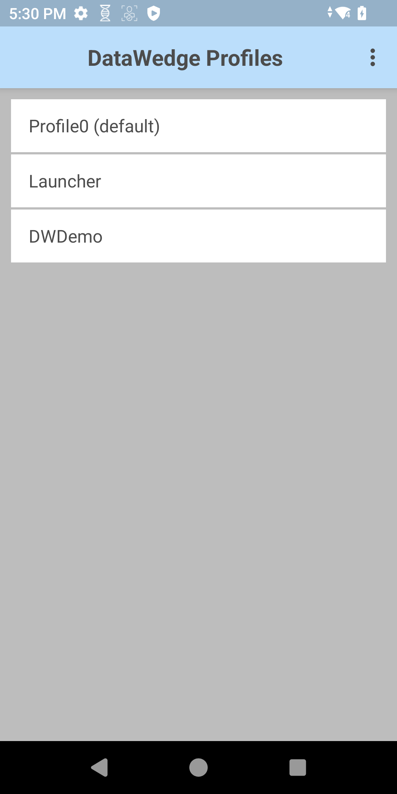
- From the top right options menu, select New Profile. 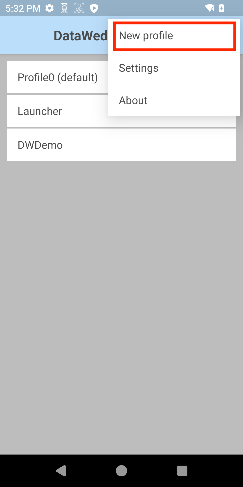
- Enter a profile name, such as "IdentityGuardian." 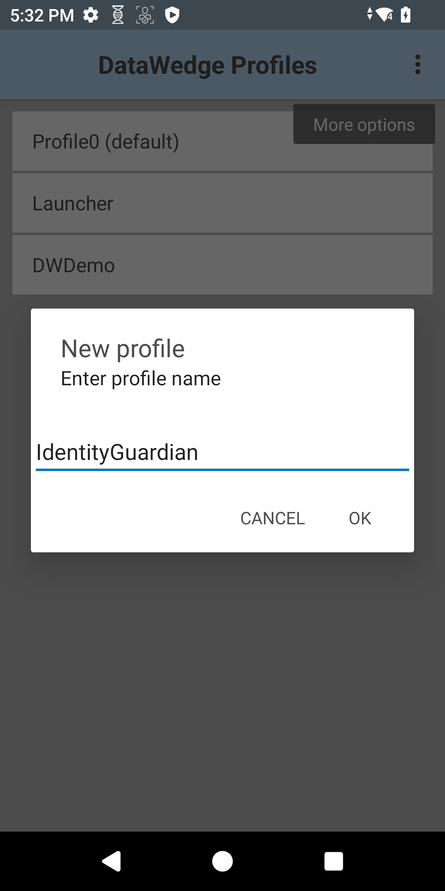
- Locate the new profile in the list and tap its name. 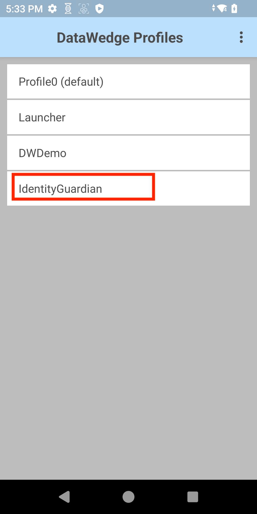
- The profile is enabled by default. Tap Associated apps. 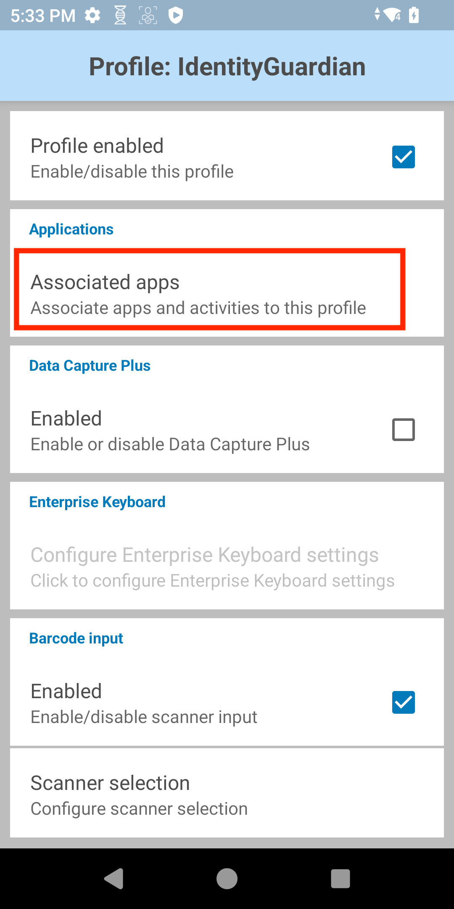
- From the top right options menu, select New app/activity. 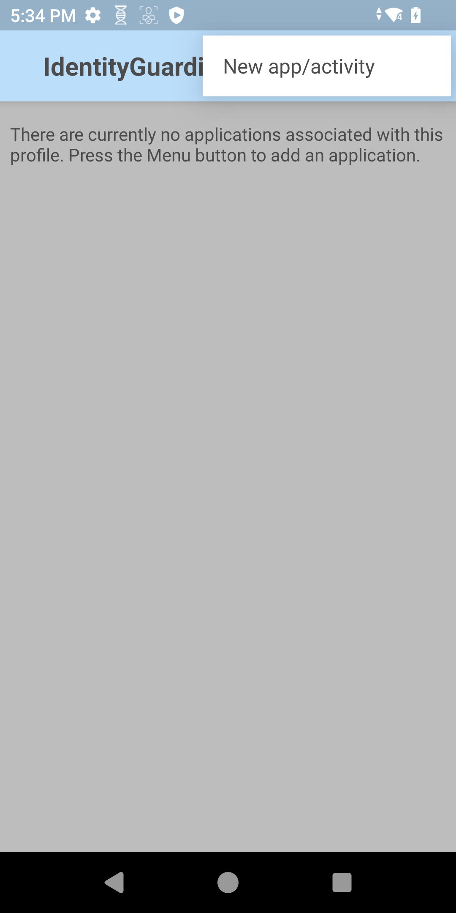
- Scroll through the app list and select com.zebra.mdna.els. 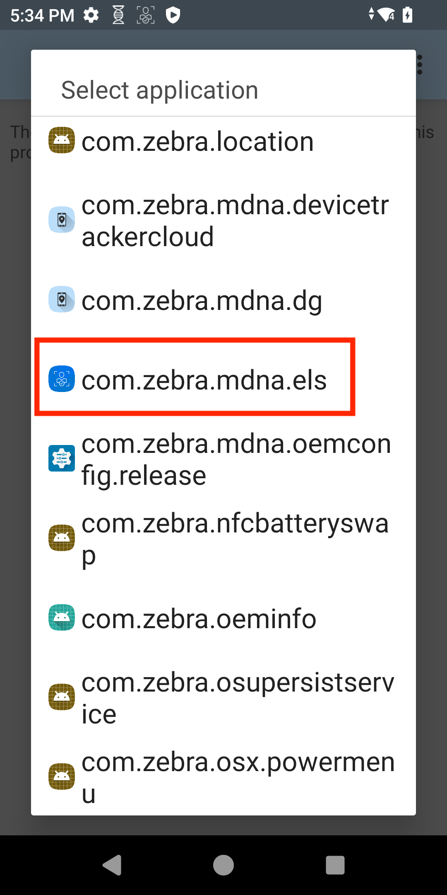
- Activities associated with the app is visible. From this list, select:
- com.zebra.mdna.els.authentication.AuthenticationActivity
- com.zebra.mdna.els.enrollment.LogoutActivity 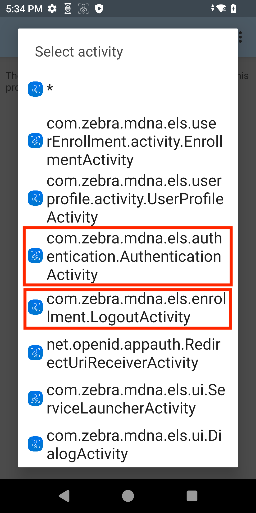
- The selected activities are displayed. 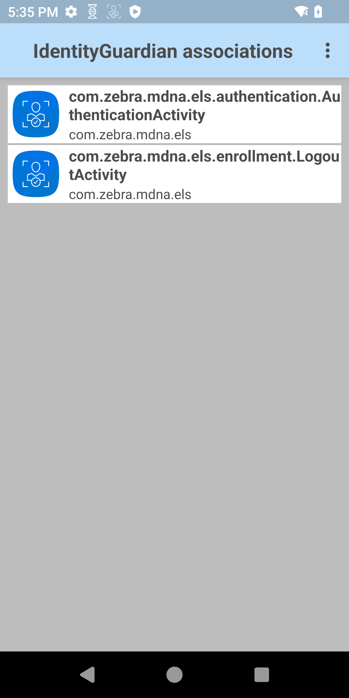
- Tap back to return to the IdentityGuardian profile screen. Ensure Barcode Input is enabled, then tap Scanner selection. 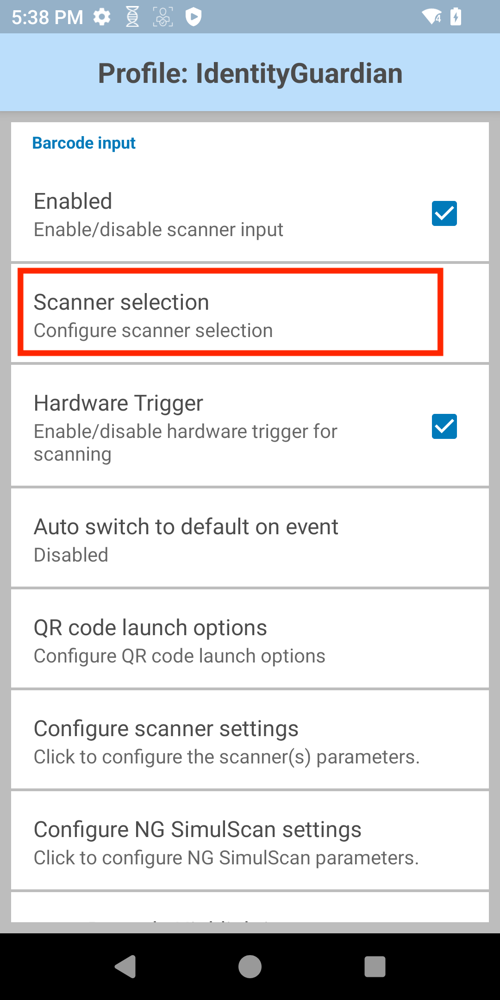
- Ensure that the Auto option is selected. 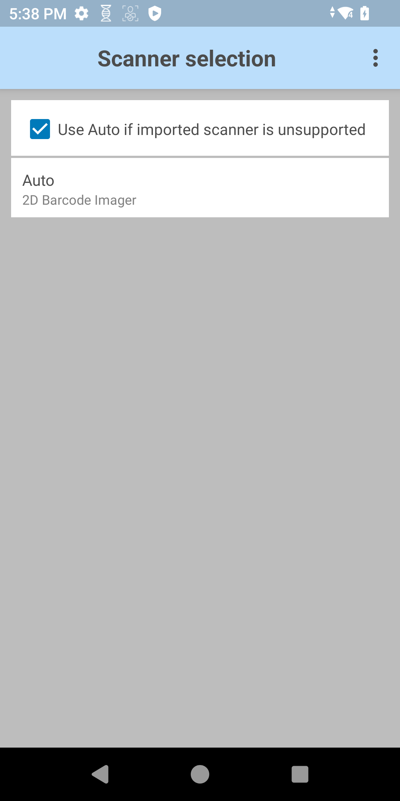
- Tap the back button to return to the IdentityGuardian profile screen. Scroll to Keystroke output and ensure it is disabled. 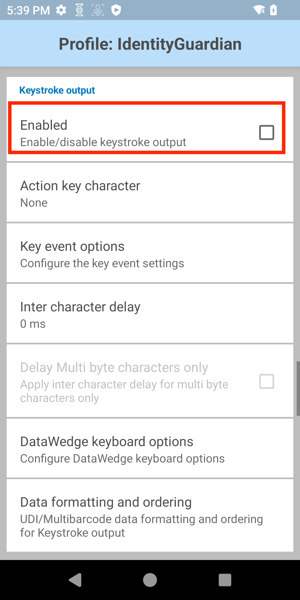
- Scroll to Intent Output and ensure it is enabled. Tap Intent action. 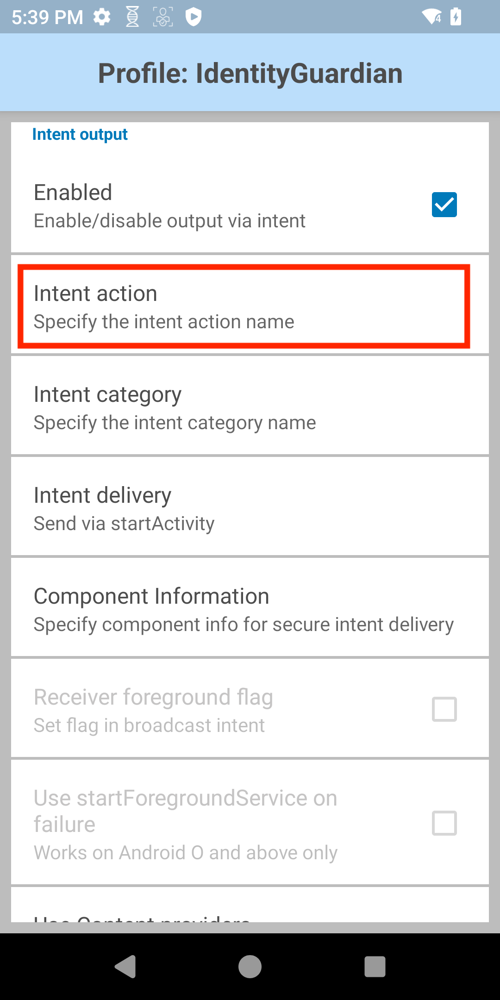
- Enter the intent action name "com.zebra.mdna.els.DATA" and tap OK. 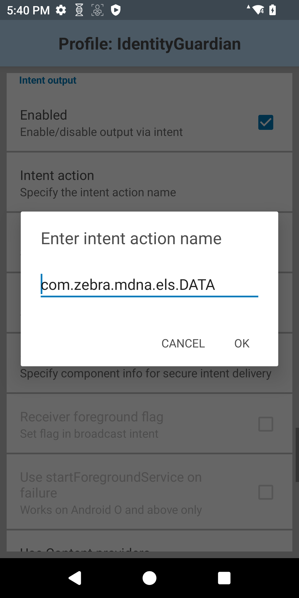
- Tap Intent category. Enter "android.intent.category.DEFAULT" and tap OK.
- Tap Intent delivery. Select Broadcast intent.
- Verify all settings.
- Export the profile and deploy it to the devices. For instructions, see DataWedge Profile Deployment.